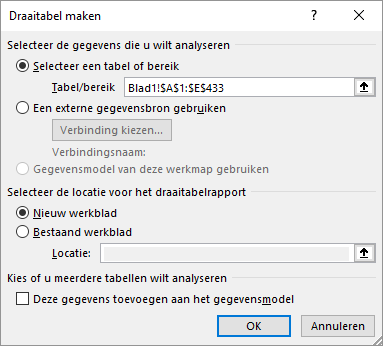
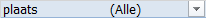
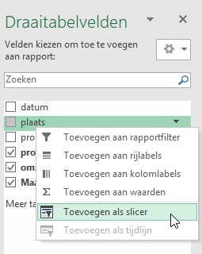
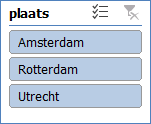
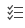
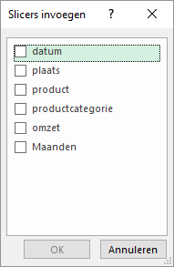
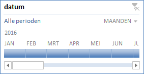
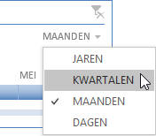
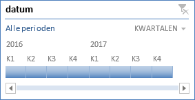

Hoe je gegevens in een draaitabel kunt filteren met behulp van rapportfilters,
slicers en tijdlijnen.
Om de gegevens in een draaitabel te filteren kun je een veld hiervoor in het
taakvenster specificeren. Maar wanneer je op meerdere items filtert, dan kun je niet
gemakkelijk zien waarop je filtert.
Een gebruikersvriendelijker manier is om slicers te gebruiken. Deze bevatten een
aantal knoppen waarmee je snel de gegevens in een draaitabel filtert. Normaal wordt
een slicer in een draaitabel gemaakt en is gekoppeld aan deze draaitabel. En alleen
voor het filteren van tijdgegevens kun je ook nog tijdlijnen gebruiken, welke
identiek zijn aan slicers. Het gebruik van slicers en tijdlijnen zie je veel in
zogenaamde dashboards omdat je deze aan meerdere draaitabellen en
draaigrafieken kunt koppelen.
Deze taak gebruikt hetzelfde hulpbestand als Taak: Draaitabellen maken welke de maandelijkse
verkoopgegevens in 2016 bevat van sommige producten, welke in drie productgroepen
zijn ondergebracht: agf (aardappelen, groente en fruit), vlees en zuivel.
Bestand:Supermarket.xlsx
Open het hulpbestand.
Selecteer een willekeurige cel in het gegevensgebied.
Kies tab Invoegen > Draaitabel (groep Tabellen).
Het dialoogvenster Draaitabel maken verschijnt. Hierin
is het Bereik reeds ingevuld.
Figuur 1: Gegevens voor draaitabel supermarkt

In deze taak moet de draaitabel op een nieuw werkblad verschijnen. Dus
accepteer de standaardlokatie en klik op OK.
Sleep in het taakvenster veld productcategorie naar
Kolommen en veld omzet naar
Waarden. Dan sleep veld datum naar
Rijen.
De automatische tijdgroepering van Excel voegt het berekend veld
Maanden toe aan de Rijen. Er
worden geen andere velden zoals kwartalen en jaren toegevoegd, omdat alle
datums alleen de laatste dag van de maand in één jaar zijn.
Sleep veld datum uit Rijen. Alleen
veld Maanden moet blijven.
Onderdeel rapportfilters
Sleep veld plaats naar het
vakFilters.
De draaitabel vertoont nu een rapportfilter: 
Klik op de keuzepijl en selecteer Amsterdam.
Alleen de gegevens voor Amsterdam worden nu getoond en het filter laat ook
zien dat Amsterdam geselecteerd is.
Klik op de keuzepijl, vink aan Meerdere items selecteren
en selecteer dan Amsterdam en Rotterdam.
De gegevens voor beide plaatsen worden nu weergegeven. Helaas geeft het
filter nu alleen maar aan dat er meerdere items geselecteerd zijn, maar niet
welke items:
Om te zien welke items dat zijn moet je op de keuzepijl klikken. Voor dit
scenario zijn slicers een beter alternatief.
Klik op de keuzepijl en selecteer de optie (Alle).
Sleep veld plaats uit het vak
Filters.
Onderdeel slicers
Klik met de rechtermuisknop op plaats in de lijst met
draaitabelvelden en kies Toevoegen als slicer.
Figuur 2: Toevoegen als slicer

En op het werkblad wordt een slicer gemaakt.
Figuur 3: Slicer plaats

Experimenteer met de slicer door items te kiezen. Je kunt meerdere items
selecteren met behulp van de Ctrl toets of via de knop
. Wissen van het filter kan met de knop
Een andere manier om slicers te maken is via het menu. Je kunt dan meerdere
slicers tegelijk maken.
Klik ergens in het draaitabelrapport en kies tab Analyseren > Slicer invoegen (groep Filter)
Dialoogvenster slicers invoegen

Selecteer Maanden and click OK.
Via het lint Opties (Hulpmiddelen voor slicers) kun je
de opmaak van een slicer wijzigen, zoals stijl, kleur, ...
Filter de gegevens met de slicers voor de eerste drie maanden van
Utrecht.
Wis alle filters. Selecteer slicer Maanden en druk op de
knop Delete op het toetsenbord.
Een tijdlijn is net als een slicer. Met een tijdlijn kun je filteren op
datum/tijd velden.
Klik ergens in het draaitabelrapport en kies tab Analyseren > Tijdlijn invoegen (groep Filter)
Het dialoogvenster Tijdlijn invoegen verschijnt met alleen het veld
datum.
Selecteer datum en klik OK.
Figuur 4: Tijdlijn maanden

Selecteer een paar maanden en bekijk de resultaten.
Klik op de keuzepijl rechtsboven voor de tijdsperiode en selecteer
Kwartalen.
Figuur 5: Keuze tijdsperiode bij een tijdlijn

Figuur 6: Tijdlijn met kwartalen

Selecteer een paar kwartalen en bekijk de resultaten.